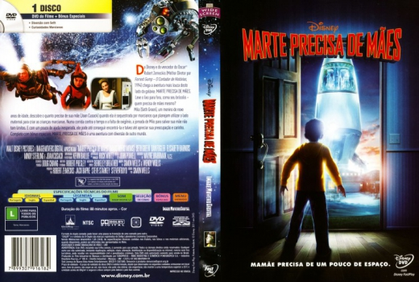

Outro Título:Mars Needs Moms
País:United States, 88 minutos
Idiomas falados:Espanhol, Inglês, Português
Gênero(s):Aventura, Animação, Família
Diretor(s):Simon Wells
Escritor(es):Simon Wells, Wendy Wells
Codec:MPEG-2 (DVD)
Número: 5807


Certificado:L
Sinopse:
Milo é um garoto de nove anos com a agenda cheia. Ele precisa assistir a filmes com monstros, ler revistas em quadrinhos e fazer outras coisas divertidas. Ele certamente não tem tempo para fazer a lição de casa ou comer legumes. O garoto está cheio de ouvir a mãe reclamando sobre essas coisas. Quando Milo está para dizer à mãe que a vida seria mais divertida sem ela, os marcianos a raptam e Milo precisa resgatá-la.
Elenco:


Tipo de mídia: DVD5,
Legendas: Espanhol, Inglês, Português, Sem Legendas
Alugado: Não
Tela: Anamorphic Widescreen